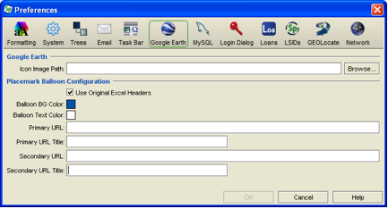

Google Earth Preferences
Google Earth Preferences
- For Mac: Choose Specify > Preferences > Google Earth.
- For Windows and Linux: Choose Edit > Preferences > Google Earth.

Google Preference
Specify plots locality records (or associated Collection Objects or Collecting Events) in Google Earth based on latitude and longitude data provided in the locality form. All associated data is stored in a KML file which is launched within Google Earth upon clicking the Google Earth icon on the locality form, or dropping a Record Set on Google Earth in the Plugins side bar.
Related data within Specify is included in an information balloon. This data varies depending on the type of Record Set that is uploaded to Google Earth. Specify also allows the insertion of two web service links for inserting additional information within the information balloon.
Google Earth must be installed on the local machine for the Specify Google Earth integration to work.
- Icon Image Path
Google Earth plots localities on a map using a Specify icon. Users can replace the Specify icon with a custom icon by clicking the browse button and choosing an image from their hard drive.
- Use Original Excel Headers
Specify stores the original headers from imported Excel files (from the WorkBench) and will use them inside the information balloon when this box is checked.
- Balloon BG Color
Change the background color of the information balloon by clicking the color square and then choosing a color from the resulting tile box.
- Balloon Text Color
Change the color of the text used in the information balloon by clicking the color square and then choosing a color from the resulting tile box.
- Primary URL
This is the URL for the first web service linking to more information for the genus and species of each Collection Object. This URL will depend upon the requirements of the web service.
Specify uses %s as the identifying markers for both genus and species. Within the URL the first %s will link to the genus and the second %s the species. For example; the fishbase URL is http://www.fishbase.org/Summary/speciesSummary.php?genusname=%s&speciesname=%s.
- Primary URL Title
Each web service is identified by an URL title within Google Earth, the title acts like a button and launches the web service from within Google Earth. A small, two-letter title is recommended.
- Secondary URL
This is the URL for the second web service linking to more information for the genus and species of each Collection Object. This URL will depend upon the requirements of the web service.
Specify uses %s as the identifying markers for both genus and species. Within the URL the first %s will link to the genus and the second %s the species. For example; the fishbase URL is http://www.fishbase.org/Summary/speciesSummary.php?genusname=%s&speciesname=%s.
- Secondary URL Title
Each web service is identified by an URL title within Google Earth, the title acts like a button and launches the web service from within Google Earth. A small, two-letter title is recommended.
- Use KMZ
Googe Earth supports both KML and KMZ file types. KMZ files are a zipped version of KML and recommended for KML files that exceed 10 Kbytes. Check this box if you will be plotting multiple records.